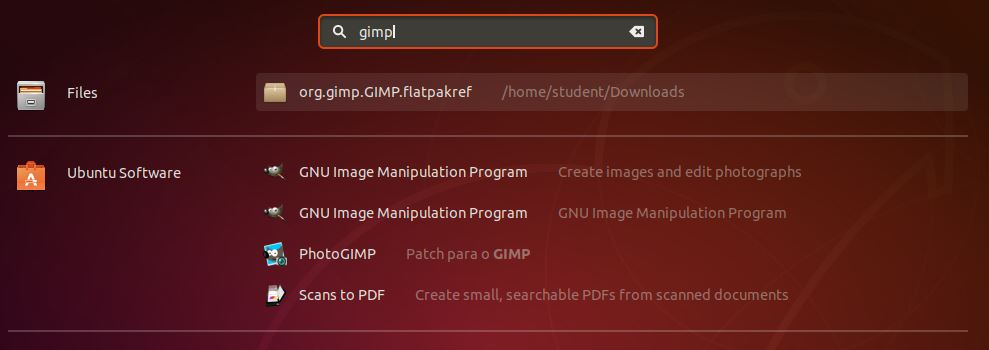
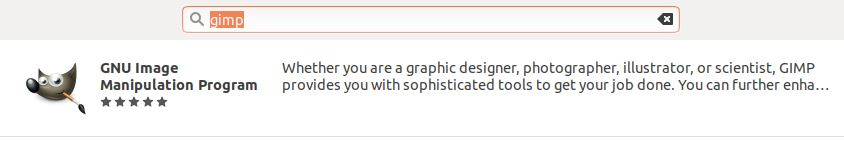
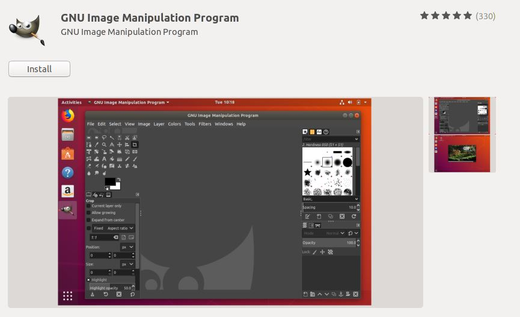
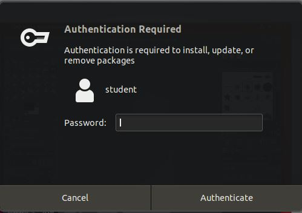
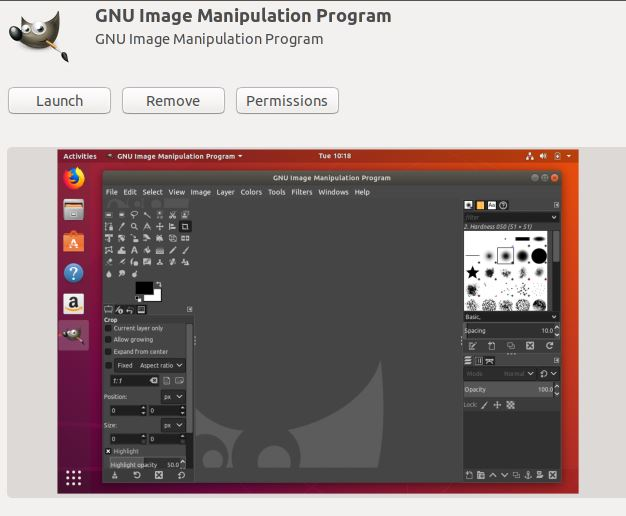
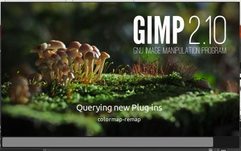
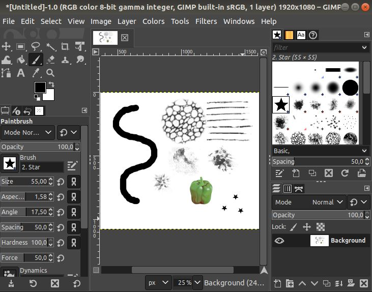

GIMP (akronyymi sanoista GNU Image Manipulation Program) on avoimeen lähdekoodiin perustuva monipuolinen kuvankäsittelyohjelma, joka on tarkoitettu rasterikuvien muokkaamiseen. Ohjelma toimii useissa käyttöjärjestelmissä, kuten Unixeissa, Linuxissa, Windowsissa ja macOS:ssä. 1. Aloita klikkaamalla ruudun vasemmasta alanurkasta "Show applications", ja kirjoita hakuun "gimp". Listasta tulisi löytyä GNU Image Manipulation Program. Valitse ohjelma listasta.  2. Tämän jälkeen aukeaa sivu, josta on mahdollista alottaa ohjelman asennus. Aloita asennus klikkaamalla "Install". Asentamiseen pitäisi kulua korkeintaan muutama minuutti.  3.  4.  5.  6.  7. 